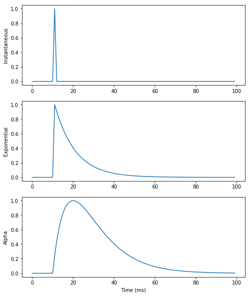
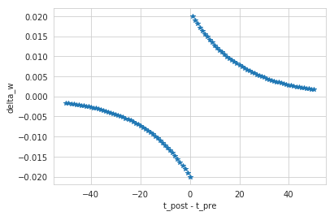

ANNarchy (Artificial Neural Networks architect)
Julien Vitay
ANNarchy (Artificial Neural Networks architect)
- Source code:
https://bitbucket.org/annarchy/annarchy
- Documentation:
https://annarchy.readthedocs.io/en/stable/
- Forum:
https://groups.google.com/forum/#!forum/annarchy
- Notebooks used in this tutorial:
Installation
Installation guide: https://annarchy.readthedocs.io/en/stable/intro/Installation.html
- From pip:
pip install ANNarchy
- From source:
git clone https://bitbucket.org/annarchy/annarchy.git
cd annarchy
python setup.py install
Requirements (Linux and MacOS):
- g++/clang++, python 2.7 or 3.5+, numpy, scipy, matplotlib, sympy, cython
Features
Simulation of both rate-coded and spiking neural networks.
Only local biologically realistic mechanisms are possible (no backpropagation).
Equation-oriented description of neural/synaptic dynamics (à la Brian).
Code generation in C++, parallelized using OpenMP on CPU and CUDA on GPU (MPI is coming).
Synaptic, intrinsic and structural plasticity mechanisms.
Structure of a script
from ANNarchy import *
setup(dt=1.0)
neuron = Neuron(...) # Create neuron types
stdp = Synapse(...) # Create synapse types for transmission and/or plasticity
pop = Population(1000, neuron) # Create populations of neurons
proj = Projection(pop, pop, 'exc', stdp) # Connect the populations
proj.connect_fixed_probability(weights=0.0, probability=0.1)
compile() # Generate and compile the code
m = Monitor(pop, ['spike']) # Record spikes
simulate(1000.) # Simulate for 1 second
data = m.get('spike') # Retrieve the data and plot it
1 - Rate-coded networks
Example 1 : Echo-State Network

Echo-State Network
ESN rate-coded neurons typically follow first-order ODEs:
$$ \tau \frac{dx(t)}{dt} + x(t) = \sum w^\text{in} \, r^\text{in}(t) + g \, \sum w^\text{rec} \, r(t) + \xi(t) $$
$$ r(t) = \tanh(x(t)) $$
from ANNarchy import *
ESN_Neuron = Neuron(
parameters = """
tau = 30.0 # Time constant
g = 1.0 : population # Scaling
noise = 0.01 : population # Noise amplitude
""",
equations="""
tau * dx/dt + x = sum(in) + g * sum(exc) + noise * Uniform(-1, 1) : init=0.0
r = tanh(x)
"""
)
Parameters
parameters = """
tau = 30.0 # Time constant
g = 1.0 : population # Scaling
noise = 0.01 : population # Noise amplitude
"""
All parameters used in the equations must be declared in the Neuron definition.
Parameters can have one value per neuron in the population (default) or be common to all neurons (flag
populationorprojection).Parameters and variables are double floats by default, but the type can be specified (
int,bool).
Variables
equations="""
tau * dx/dt + x = sum(in) + g * sum(exc) + noise * Uniform(-1, 1) : init=0.0
r = tanh(x)
"""
Variables are evaluated at each time step in the order of their declaration, except for coupled ODEs.
Variables can be updated with assignments (
=,+=, etc) or by defining first order ODEs.The math C library symbols can be used (
tanh,cos,exp, etc).Initial values at $t=0$ can be specified with
init(default: 0.0).Lower/higher bounds on the values of the variables can be set with the
min/maxflags:
r = x : min=0.0 # ReLU
Additive noise can be drawn from several distributions, including
Uniform,Normal,LogNormal,Exponential,Gamma…The output variable of a rate-coded neuron must be
r.
ODEs
- First-order ODEs are parsed and manipulated using
sympy:
# All equivalent:
tau * dx/dt + x = 0.0
tau * dx/dt = - x
dx/dt = (-x)/tau
Several numerical methods are available (https://annarchy.readthedocs.io/en/stable/manual/NumericalMethods.html):
Explicit (forward) Euler (default):
tau * dx/dt + x = 0.0 : init=0.0, explicitImplicit (backward) Euler:
tau * dx/dt + x = 0.0 : init=0.0, implicitExponential Euler (exact for linear ODE):
tau * dx/dt + x = 0.0 : init=0.0, exponentialMidpoint (RK2):
tau * dx/dt + x = 0.0 : init=0.0, midpointEvent-driven (spiking synapses):
tau * dx/dt + x = 0.0 : init=0.0, event-driven
Coupled ODEs
- ODEs are solved concurrently, instead of sequentially for assignments:
# I is updated
I = sum(exc) - sum(inh) + b
# u and v are solved concurrently using the current of I
tau * dv/dt + v = I - u
tau * du/dt + u = v
# r uses the updated value of v
r = tanh(v)
The order of the equations therefore matters a lot.
A single variable can only be updated once in the
equationsfield.
Populations
- Populations are creating by specifying a number of neurons and a neuron type:
pop = Population(1000, ESN_Neuron)
- For visualization purposes or when using convolutional layers, a tuple geometry can be passed instead of the size:
pop = Population((100, 100), ESN_Neuron)
- All parameters and variables become attributes of the population (read and write) as numpy arrays:
pop.tau = np.linspace(20.0, 40.0, 1000)
pop.r = np.tanh(pop.v)
- Single neurons can be individually modified, if the
populationflag was not set:
pop[10].r = 1.0
- Slices of populations are called
PopulationViewand can be addressed separately:
pop = Population(1000, ESN_Neuron)
E = pop[:800]
I = pop[800:]
Projections
- Projections link two populations (or views) in a uni-directional way.
proj_exc = Projection(E, pop, 'exc')
proj_inh = Projection(I, pop, 'inh')
Each target (
'exc', 'inh', 'AMPA', 'NMDA', 'GABA') can be defined as needed and will be treated differently by the post-synaptic neurons.The weighted sum of inputs for a specific target is accessed in the equations by
sum(target):
equations="""
tau * dx/dt + x = sum(exc) - sum(inh)
r = tanh(x)
"""
- It is therefore possible to model modulatory effects, divisive inhibition, etc.
Connection methods
Projections must be populated with a connectivity matrix (who is connected to who), a weight
wand optionally a delayd(uniform or variable).Several patterns are predefined:
proj.connect_all_to_all(weights=Normal(0.0, 1.0), delays=2.0, allow_self_connections=False)
proj.connect_one_to_one(weights=1.0, delays=Uniform(1.0, 10.0))
proj.connect_fixed_number_pre(number=20, weights=1.0)
proj.connect_fixed_number_post(number=20, weights=1.0)
proj.connect_fixed_probability(probability=0.2, weights=1.0)
proj.connect_gaussian(amp=1.0, sigma=0.2, limit=0.001)
proj.connect_dog(amp_pos=1.0, sigma_pos=0.2, amp_neg=0.3, sigma_neg=0.7, limit=0.001)
- But you can also load Numpy arrays or Scipy sparse matrices. Example for synfire chains:
w = np.array([[None]*pre.size]*post.size)
for i in range(post.size):
w[i, (i-1)%pre.size] = 1.0
proj.connect_from_matrix(w)
w = lil_matrix((pre.size, post.size))
for i in range(pre.size):
w[pre.size, (i+1)%post.size] = 1.0
proj.connect_from_sparse(w)
Compiling and running the simulation
- Once all populations and projections are created, you have to generate to the C++ code and compile it:
compile()
You can now manipulate all parameters/variables from Python thanks to the Cython bindings.
A simulation is simply run for a fixed duration with:
simulate(1000.) # 1 second
- You can also run a simulation until a criteria is filled, check:
https://annarchy.readthedocs.io/en/stable/manual/Simulation.html#early-stopping
Monitoring
By default, a simulation is run in C++ without interaction with Python.
You may want to record some variables (neural or synaptic) during the simulation with a
Monitor:
m = Monitor(pop, ['v', 'r'])
n = Monitor(proj, ['w'])
- After the simulation, you can retrieve the recordings with:
recorded_v = m.get('v')
recorded_r = m.get('r')
recorded_w = n.get('w')
Warning: calling
get()flushes the array.Warning: recording projections can quickly fill up the RAM (see Dendrites).
Example 1: Echo-State Network
- Link to the Jupyter notebook on github: RC.ipynb
2 - Spiking networks
Spiking neurons
Spiking neurons must also define two additional fields:
spike: condition for emitting a spike.reset: what happens after a spike is emitted (at the start of the refractory period).
A refractory period in ms can also be specified.
Example of the Leaky Integrate-and-Fire:
LIF = Neuron(
parameters="""
tau = 20.
E_L = -70.
v_T = 0.
v_r = -58.
I = 50.0
""",
equations="""
tau * dv/dt = (E_L - v) + I : init=E_L
""",
spike=" v >= v_T ",
reset=" v = v_r ",
refractory = 2.0
)
Conductances / currents
- A pre-synaptic spike arriving to a spiking neuron increase the conductance
g_target(e.g.g_excorg_inh, depending on the projection).
LIF = Neuron(
parameters="...",
equations="""
tau * dv/dt = (E_L - v) + g_exc - g_inh
""",
spike=" v >= v_T ",
reset=" v = v_r ",
refractory = 2.0
)
- Each spike increments
g_targetfrom the synaptic efficiencywof the corresponding synapse.
g_target += w
- This defines an instantaneous model of synaptic transmission.
Conductances / currents
For exponentially-decreasing or alpha-shaped synapses, ODEs have to be introduced for the conductance/current.
The exponential numerical method should be preferred, as integration is exact.
LIF = Neuron(
parameters="...",
equations="""
tau * dv/dt = (E_L - v) + g_exc + alpha_exc # exponential or alpha
tau_exc * dg_exc/dt = - g_exc : exponential
tau_exc * dalpha_exc/dt = exp((tau_exc - dt/2.0)/tau_exc) * g_exc
- alpha_exc : exponential
""",
spike=" v >= v_T ",
reset=" v = v_r ",
refractory = 2.0
)
Conductances / currents

Example 2: AdEx - Adaptive exponential neuron
- Link to the Jupyter notebook on github: AdEx.ipynb
$$ \tau \, \frac{dv}{dt} = (E_L - v) + \delta_T \, \exp \frac{v-v_T}{\delta_T} + I - w $$ $$ \tau_w \, \frac{dw}{dt} = a \, (v - E_L) - w $$
AdEx = Neuron(
parameters="""
tau = 20.
E_L = -70.
v_T = -50. ; v_r = -58.
delta_T = 2.0
a = 0.2 ; b = 0.
tau_w = 30.
I = 50.0
""",
equations="""
tau * dv/dt = (E_L - v) + delta_T * exp((v-v_T)/delta_T) + I - w : init=E_L
tau_w * dw/dt = a * (v - E_L) - w : init=0.0
""",
spike=" v >= 0.0 ",
reset=" v = v_r ; w += b ",
refractory = 2.0
)
3 - Synaptic plasticity
Rate-coded synapses : Intrator & Cooper BCM learning rule
- Synapses can also implement equations that will be evaluated after each neural update.
IBCM = Synapse(
parameters = """
eta = 0.01 : projectionAdEx
tau = 2000.0 : projection
""",
equations = """
tau * dtheta/dt + theta = post.r^2 : postsynaptic, exponential
dw/dt = eta * post.r * (post.r - theta) * pre.r : min=0.0, explicit
""",
psp = " w * pre.r"
)
The synaptic efficiency (weight) must be
w.Each synapse can access pre- and post-synaptic variables with
pre.andpost..The
postsynapticflag allows to do computations only once per post-synaptic neurons.pspoptionally defines what will be summed by the post-synaptic neuron (e.g.psp = "w * log(pre.r)").
Plastic projections
- The synapse type just has to be passed to the Projection:
proj = Projection(inp, pop, 'exc', IBCM)
- Synaptic variables can be accessed as lists of lists for the whole projection:
proj.w
proj.theta
or for a single post-synaptic neuron (Dendrite):
proj[10].w
Example 3: Miconi’s reward modulated RC network
- Link to the Jupyter notebook on github: Miconi.ipynb

Spiking synapses : Example of Short-term plasticity (STP)
Spiking synapses can define a
pre_spikefield, defining what happens when a pre-synaptic spike arrives at the synapse.g_targetis an alias for the corresponding post-synaptic conductance: it will be replaced byg_excorg_inhdepending on how the synapse is used.By default, a pre-synaptic spike increments the post-synaptic conductance from
w:g_target += w
STP = Synapse(
parameters = """
tau_rec = 100.0 : projection
tau_facil = 0.01 : projection
U = 0.5
""",
equations = """
dx/dt = (1 - x)/tau_rec : init = 1.0, event-driven
du/dt = (U - u)/tau_facil : init = 0.5, event-driven
""",
pre_spike="""
g_target += w * u * x
x *= (1 - u)
u += U * (1 - u)
"""
)
Spiking synapses : Example of Spike-Timing Dependent plasticity (STDP)
post_spikesimilarly defines what happens when a post-synaptic spike is emitted.
STDP = Synapse(
parameters = """
tau_plus = 20.0 : projection ; tau_minus = 20.0 : projection
A_plus = 0.01 : projection ; A_minus = 0.01 : projection
w_min = 0.0 : projection ; w_max = 1.0 : projection
""",
equations = """
tau_plus * dx/dt = -x : event-driven # pre-synaptic trace
tau_minus * dy/dt = -y : event-driven # post-synaptic trace
""",
pre_spike="""
g_target += w
x += A_plus * w_max
w = clip(w + y, w_min , w_max)
""",
post_spike="""
y -= A_minus * w_max
w = clip(w + x, w_min , w_max)
""")
Spiking synapses : Example of Spike-Timing Dependent plasticity (STDP)

And much more…
Standard populations (
SpikeSourceArray,TimedArray,PoissonPopulation,HomogeneousCorrelatedSpikeTrains), OpenCV bindings.Standard neurons:
- LeakyIntegrator, Izhikevich, IF_curr_exp, IF_cond_exp, IF_curr_alpha, IF_cond_alpha, HH_cond_exp, EIF_cond_exp_isfa_ista, EIF_cond_alpha_isfa_ista
Standard synapses:
- Hebb, Oja, IBCM, STP, STDP
Parallel simulations with
parallel_run.Convolutional and pooling layers.
Hybrid rate-coded / spiking networks.
Structural plasticity.